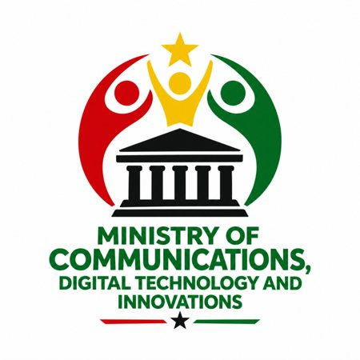

Digital skills
Learning opportunities that help young people build confidence using digital tools.

Learning & participation
The Ministry promotes digital skills, innovation and communication through youth-focused initiatives and collaborative activities.
Programme information
The Ministry’s programmes focus on practical learning, responsible technology use and opportunities for young people to contribute ideas and solutions. Updates on upcoming activities are shared through the Ministry’s official communication channels.
Enquire about programmes →Learning opportunities that help young people build confidence using digital tools.
Activities that encourage practical problem-solving and creative thinking.
Initiatives that support clear, responsible and inclusive communication.